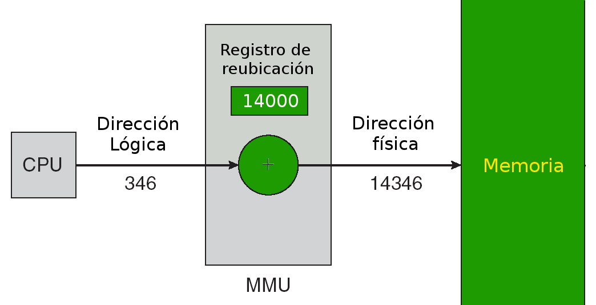
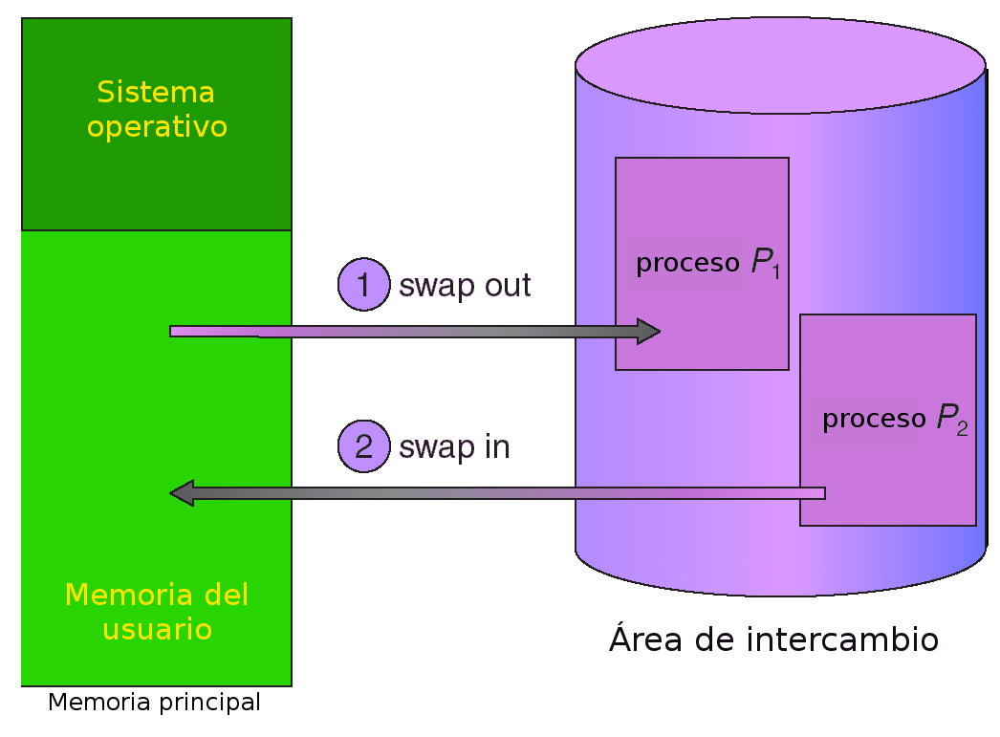
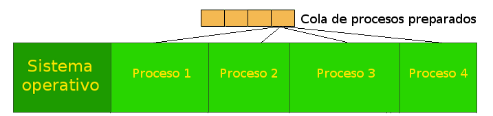
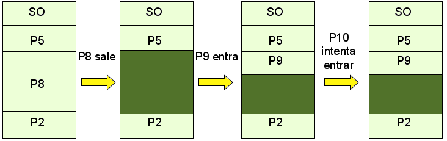

Universidad Nacional Experimental Del Táchira
Decanato De Docencia
Dpto. Ingeniería Informática
Sistemas Operativos
Código 0435607T
Arquitectura Von Neuman
Fue creada por John Von Neumann en 1949, para solucionar el problema de recableado cada vez que era necesario ejecutar una nueva tarea de una computadora.
Actualmente todas las computadoras utilizan esta arquitectura.

Arquitectura Von Neuman
En esta arquitectura una computadora consta de:
- La unidad aritmético-lógica o ALU.
- La unidad de control.
- La memoria principal.
- Un dispositivo de entrada/salida.
- El bus de datos.
Basada en la imagen de wikipedia.org
Fundamentos
Pasos para ejecutar un programa
Arquitectura Von Neuman
- Se prende la computadora y se lee la siguiente instrucción desde la memoria en la dirección indicada por el contador de programa y se la guarda en el registro de instrucción.
- Se aumenta el contador de programa en la longitud de la instrucción para apuntar a la siguiente
- Decodifica la instrucción mediante la unidad de control y coordina los demas componentes para ejecutarla.
- Se ejecuta la instrucción. (Cuando se realizan ciclos se modifica el contador del programa para repetir instrucciones)
Hardware comercial
disponible actualmente
- Todos los CPUs estan conectados por el mismo canal al puente norte.
- Todos los dispositivos de E/S estan conectados al puente sur.

- Toda la comunicación viaja en el mismo bus usado para comunicarse con el puente norte.
Puente Norte y Sur


Afirmaciones sobre la memoria
- Un programa debe cargarse en memoria desde disco y colocarse dentro de un proceso para que se ejecute.
- La memoria principal y los registros son los únicos dispositivos de almacenamiento a los que puede acceder la CPU directamente.
- El acceso a registro es muy rápido, consume un ciclo de CPU (o menos),
- El acceso a memoria principal es muy lento y puede durar varios ciclos.
- Las memorias caché se colocan entre la memoria principal y la CPU para acelerar el acceso a la información.
Objetivos del
Sistema de Gestión de Memoria
- Compartimiento de Memoria
- Espacios Lógicos Independientes.
- Protección.
- Soporte de las regiones del proceso.
- Maximizar el rendimiento.
- Proporcionar mapas de memoria grandes.
Reasignación de direcciones
Etapas en el procesamiento de un
programa de usuario
- Tiempo compilación: si se conoce donde va a residir el proceso en memoria, se genera código absoluto, si cambia de posición se debe recompilar.
- Tiempo de carga: si no se conoce la ubicación del proceso en memoría, se genera código reubicable.
Reasignación de direcciones
Etapas en el procesamiento de un
programa de usuario
- Tiempo de ejecución: si el proceso puede cambiar de posición durante su ejecución, la vinculación se realiza en el momento de ejecución. Necesita soporte hardware para el mapeo de direcciones ( registros base y límite)
Espacio de Direcciones
Físicas y Lógicas
Separar las direcciones de memorias en dos tipos, es necesario para obtener una buena gestión de memoria. Los dos tipos de direcciones existentes son:
-
Dirección Lógica:
Es la dirección generada por el CPU u proceso, también se le conoce como dirección virtual. -
Dirección Física:
Es la dirección cargada en el registro de direcciones de memoria de la memoria. Es decir, la dirección vista por la unidad de memoria.
Espacio de Direcciones
Físicas y Lógicas
El conjunto de todas las direcciones lógicas de un programa se le conoce como espacio de direcciones lógicas y para las físicas como espacio de direcciones físicas.
Registro base y límite
| 0 | 1549 | 2489 | 3698 | 4978 | 5324 | 6132 | 7210 |
|---|---|---|---|---|---|---|---|
| Sistema Operativo | Proceso 2 | Proceso 3 | Proceso 4 | ||||
| Base: 2489 | Límite: 1209 | ||||||
Para conocer el espacio asignado a un proceso, se suma: Base + Límite
Unidad de Gestión de Memoria (MMU)
- La MMU (Memory Management Unit) es un dispositivo para transformar de direcciones virtuales en físicas, utilizando una circuitería de hardware llamada Unidad de segmentación.
- Cada vez que un proceso genera una dirección de memoria, el MMU adiciona a cada una de éstas el registro base (también conocido como registro de ubicación) en el momento que es enviada a memoria.
- El programa de usuario trabaja con direcciones lógicas; nunca ve las direcciones físicas reales.
Unidad de Gestión de Memoria (MMU)

Intercambio
- Es importante recordar que todo proceso debe estar en memoria para ser ejecutado.
- A veces, los procesos pueden ser intercambiados temporalmente, sacándolos de la memoria y almacenándolos en un almacén de respaldo. Y luego vicerversa.
- El un almacén de respaldo o un almacén auxiliar es un disco con capacidad suficiente para albergar copias de imágenes de memoria para todos los usuarios.
- Una vez guardado en disco el proceso, pasa a la cola de preparados para volver a cargarse en memoria.
Intercambio
- El algoritmo para el intercambio, se llama Roll out, roll in y es una variante del algoritmos de planificación basados en prioridad; un proceso de baja prioridad se retira de memoria para cargar y ejecutar otro con mayor prioridad.
- La mayor parte del tiempo de intercambio es tiempo de transferencia; el cual es directamente proporcional a la cantidad de memoria intercambiada.
Intercambio

Modelo de Multiprogramación
- Se facilita la programación al dividirla en dos o más procesos.
- Capacidad de proporcionar un servicio interactivo a varios usuarios (varios procesos en memoria).
- Desperdicio de tiempo por parte de los procesos limitados por E/S en la monoprogramación.
Modelo de Multiprogramación
Uso del CPU
Modelo de Multiprogramación
Modelo de Multiprogramación
Uso del CPU
Ejemplo de una PC
Se cuenta con una computadora de 32MB de memoria RAM, donde:
- 16MB están ocupados por el Sistema Operativo.
- Cada proceso de usuario ocupa 4MB.
- El uso aproximado de E/S es de 80%.
Calcular el uso aproximado de CPU para 4 procesos de usuario.
Modelo de Multiprogramación
Uso del CPU
Punto de equilibrio

Asignación de memoria contigua

- El sistema operativo se almacena en la parte baja o alta de la memoria. Generalmente es en la parte baja junto al vector de interrupciones.
- Cuando se utiliza multiprogramación, se crean particiones de tamaño fijo para cada proceso.
- El S.O. mantiene una tabla de particiones para conocer cuáles estan libres u ocupadas.
Distribución de la memoria (x86)

Fuente: Coding Horror (Blog de Jeff Atwood)
Asignación de memoria contigua
La zona para procesos de usuarios se encuentra dividida a su vez en varias particiones que se asignarán a los procesos:
-
Particionamiento estático:
las particiones se establecen en el arranque del sistema operativo y permanecen fijas todo el tiempo. -
Particionamiento dinámico:
las particiones cambian de acuerdo a los requisitos de los procesos.
Asignación Estática
de Memoria Particionada
Asignación estática con múltiples particiones
- Se le conoce como Hueco a un bloque de memoria disponible. A lo largo del tiempo existirán huecos de diversos tamaños distribuidos a lo largo de la memoria.
- Cuando un proceso llega, se le asigna un hueco lo suficientemente grande para caber en él.
- Se debe recordar que el S.O. guarda información sobre las particiones asignadas y libres (huecos).
Asignación estática con múltiples particiones
Asignación Estática
de Memoria Particionada

Asignación Estática
de Memoria Particionada
Existen varias formas para satisfacer las solicitudes de tamaño n partiendo de una lista de huecos.
-
Primer ajuste (First-Fit)
Se asigna el primer hueco suficientemente grande que se encuentre. -
Mejor ajuste (Best-fit)
Asigna el hueco más pequeño que es lo suficientemente grande.
Asignación Dinámica
de Memoria Particionada
- El tamaño y ubicación de las particiones no es fijo, cambia a lo largo del tiempo.
- Cuando un proceso sale de la memoria, se libera su espacio creando una nueva partición libre (hueco).
- Se conservan las consideraciones de proteccion de la asignación estática.
Asignación Dinámica
de Memoria Particionada
-
Primer ajuste (First-fit)
Se asigna el primer hueco lo suficientemente grande. -
Mejor ajuste (Best-fit)
Se asigna el hueco más pequeño que es lo suficientemente grande. -
Peor ajuste (Worst-fit)
Se asigna el hueco más grande.
Fragmentación
-
Fragmentación Interna
la memoria asignada puede ser ligeramente mayor de la solicitada; esta diferencia de tamaño se encuentra en la partición pero no es usada. -
Fragmentación Externa
en total existe suficiente memoria libre para satisfacer una petición, pero no se puede realizar debido a que no se encuentra contigua.
Fragmentación = 1 - (Tamaño del mayor Hueco / Total de Memoria)
Formas para llevar el registro de la memoria
- Mapa de bits
- Listas enlazadas
- Sistemas asociados
Mapa de bits

- Se divide la memoria en segmentos del mismo tamaño.
- Se crea un mapa de bits, donde cada bit representa un segmento y su valor indica si está o no ocupado.
Listas enlazadas

- Se ordenan por dirección para aumentar la velocidad lectura.
- Se pueden tener 2 listas: una para los espacios ocupados y otra para los huecos. Sin embargo, la liberación es lenta.
Sistema de los Asociados

- Se tiene la memoria inicialmente como un gran espacio, el cual se va dividiendo en múltiplos de potencia de 2 cada vez que un proceso hace solicitud de memoria.
- El problema es que crea fragmentación interna.